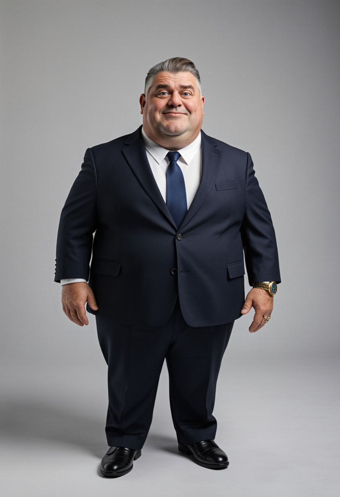

Circle the Square — Character Model Sheet
Prism · Production Reference · 01 / Jan PeachJAN PEACH
Self-styled: "The Visionary" — CEO, Prism
Character Core
- Name
- Jan Peach
- Gender
- Male
- Age
- 52
- Height
- 178 cm (5'10")
- Body type
- Soft, overweight — gut straining shirt buttons
- Ethnicity
- White British
- Role
- CEO, Prism — self-appointed lead, "Project Inception"
- Archetype
- Delusional narcissist / petty tyrant
Personality & Traits
- Personality
- Arrogant, thin-skinned, credential-obsessed
- Core theme
- Delusion vs. accountability
- Emotional range
- Oily corporate calm collapsing instantly into red-faced screaming
- Behavior notes
- Leans on his MBA to end arguments; sweats visibly under pressure; escalates physically when cornered
- Speech style
- British corporate jargon curdling into all-caps shouting; fond of command phrases ("Make it so", "GET BACK TO WORK")
Color Palette
Skin tone#E2B192
Hair (greying brown)#8A7660
Suit — primary#182238
Shirt / tie — secondary#F4F1EA
Accents — gold hardware#C9A227
Main Identity & Scale Sheet
180
140
100
60
20
0 cm



Head Detail Sheet


Notes Panel
- Default expression is a smug half-smile — it vanishes instantly the moment he's crossed
- Reddens and sweats heavily under stress; track escalation across a scene
- Posture is chest-out, chin-up by default; only collapses to slouched/defeated after the taser hit
- Keep the receding hairline and soft midsection consistent — early passes drifted toward a generic fit executive look
- Expression and sweat level should escalate scene-to-scene toward the canteen meltdown
Wardrobe / Accessories
Top
Navy two-button suit jacket, slightly tight fit
Bottom
Matching navy suit trousers
Shoes
Black leather oxfords, polished but scuffed
Accessories
Oversized gold wristwatch, wedding ring, Prism ID lanyard
Props (optional)
- Prism-branded coffee mug
- "Project Inception" branded stress ball / pen / t-shirt
- Mobile phone, constantly in hand